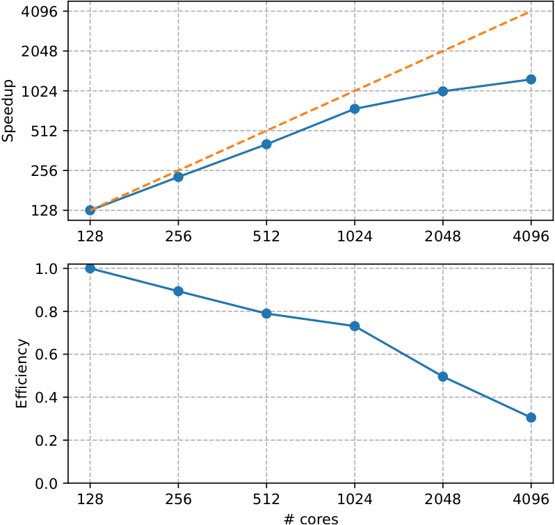
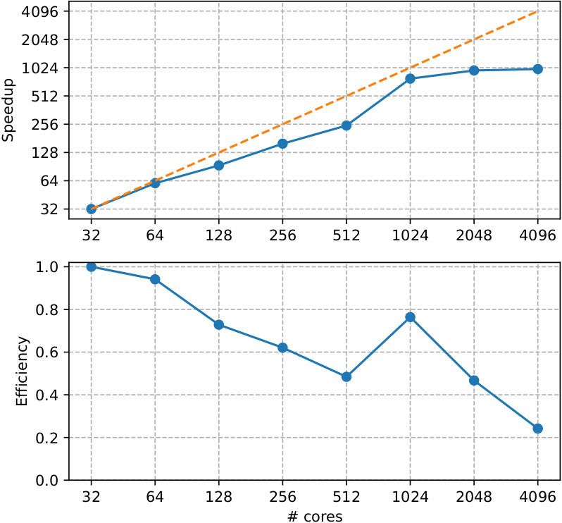
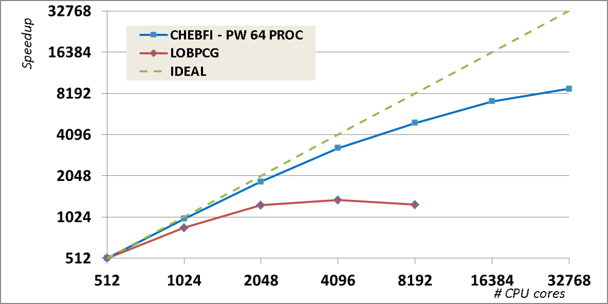
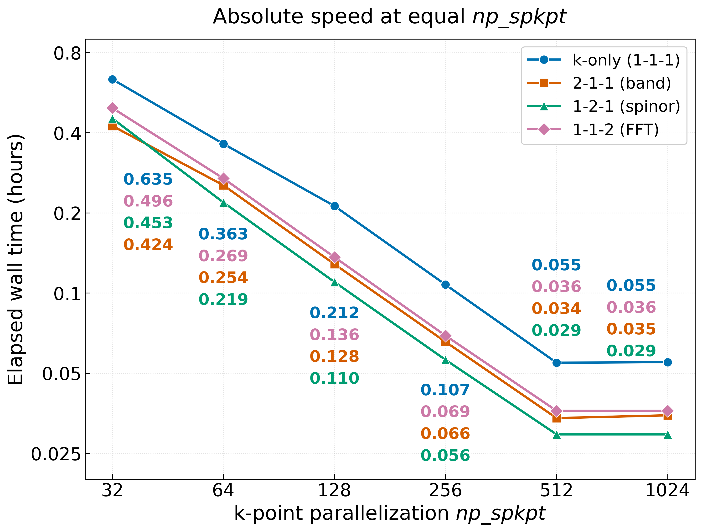
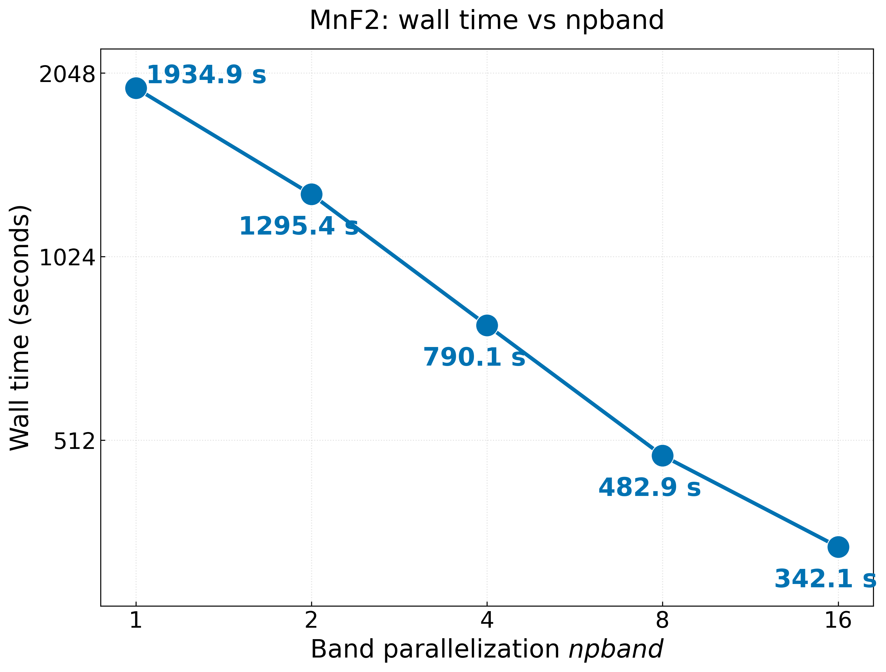
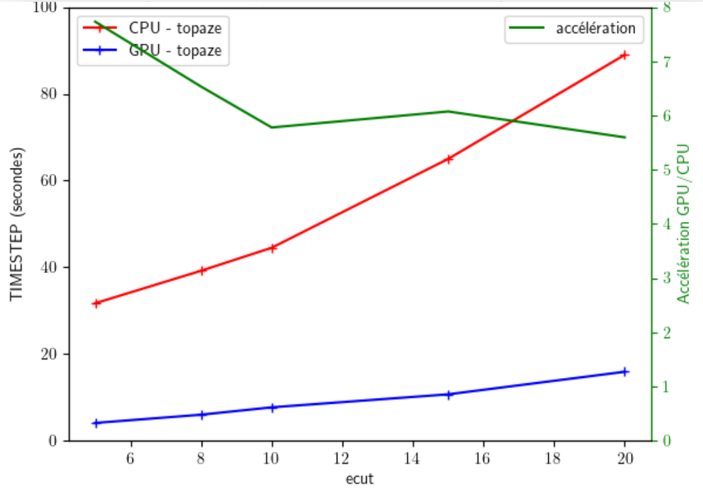
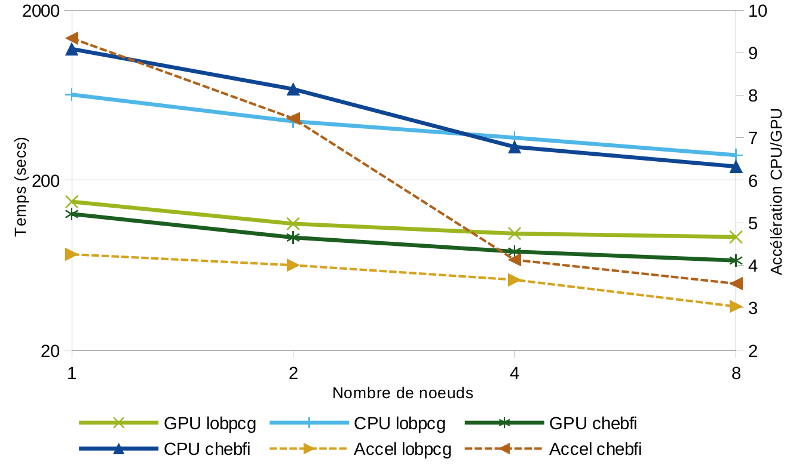
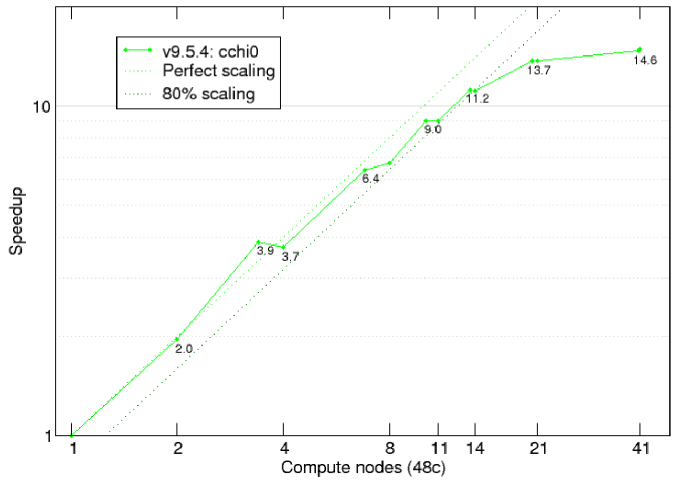

Parallel performance of ABINIT on different systems and supercomputers. Each benchmark gives the feature tested, the system, the ABINIT version, the compilation options and the hardware.

Ground-state calculation - self-consistent DFT
625 atoms supercell of LiSrH3 with one Eu(Sr) substitution | 1 k-point | 1024 bands | GGA+U on Eu-4f with PAW pseudos from Pseudo Dojo (JTH v1.1 PBE standard) | Paral over 2 spins, npbands, npfft, bandpp
Gnu 11.3 compiler with -g -O2 and MPI
Lucia supercomputer AMD EPYC 7513 32C 2.6GHz with Mellanox HDR Infiniband

Ground-state calculation - self-consistent DFT
Ti metal, 3 atoms/cell | 80x80x80 dense k-mesh | 20 bands
Gnu 11.3 compiler with -g -O2 and MPI
Lucia supercomputer AMD EPYC 7513 32C 2.6GHz with Mellanox HDR Infiniband
Until 512 cores only k-point parallelization is used while above there are additional parallelization levels on bands and fft, explaining the improved performance.

Ground-state calculation - self-consistent DFT with different diagonalization algorithms.
512 atoms of Ti with PAW pseudopotential [nband=4096]
We used the Intel MKL library for BLAS and LAPACK dense linear algebra, and the ELPA library for the dense eigenproblem in the Rayleigh–Ritz step (in our tests, we found it was about twice as fast as ScaLAPACK).
Curie supercomputer with 16-core Intel Nehalem-EX X7560 @ 2.26 GHz processors per node.

Ground-state calculation - non-collinear magnetism with constrained DFT (direction of the Mn magnetic moments) - Comparison of parallelization levels at equal k-point parallelization np_spkpt
MnF2, 12 atoms | non-collinear antiferromagnetic order | 10×10×5 k-mesh | FFT grid 64×64×90 | 160 bands | ecut = 60 Ha | LDA with ONCVPSP norm-conserving pseudopotentials (PseudoDojo v0.4 for Mn)
Gnu 11.3 compiler with -g -O2 -march=native and MPI
Lucia supercomputer AMD EPYC 7763 64C 2.45GHz with Mellanox HDR Infiniband
The legend gives npband-npspinor-npfft (bandpp = 40). Total wall time of a run with one SCF step (nstep 1); with only 500 k-points, there is no further gain above np_spkpt = 512.

Ground-state calculation - non-collinear magnetism with constrained DFT (direction of the Mn magnetic moments) - Scaling with band parallelization npband
Same MnF2 system as above | np_spkpt = 32 | npspinor = 1 | npfft = 1 | bandpp = 10 | total MPI processes = 32 × npband
Gnu 11.3 compiler with -g -O2 -march=native and MPI
Lucia supercomputer AMD EPYC 7763 64C 2.45GHz with Mellanox HDR Infiniband
Total wall time of a run with one SCF step (nstep 1); from npband = 1 to 16 the speed-up is 5.7.

Ground-state calculation - self-consistent DFT - Comparison between GPU and CPU
512 atoms of Ti with PAW pseudopotential | 1 k-point | 4096 bands | GGA with PAW pseudos from Pseudo Dojo (JTH v1.1 PBE standard)
gfortran 11.2.0 -g -O2 using OpenMPI 4.1.4, Cuda 11.8, Kokkos 3.7.00, and mkl 22.3
CPU AMD EPYC 7H12 2*64 cores and GPU 4*Nvidia A100 40Gb

Ground-state calculation - self-consistent DFT - Comparison between GPU and CPU
512 atoms of Ti with PAW pseudopotential | 1 k-point | 2048 bands | ecut = 5 Ha | GGA with PAW pseudos from Pseudo Dojo (JTH v1.1 PBE standard)
Compiler NVHPC 22.11 -g --use_fast_math --compiler-options=-O3 with openMP target + cuda
CPU AMD EPYC 7H12 2*64 cores per node and GPU 4*Nvidia A100 80Gb per node

Screening part of a GW calculation: optdriver 3
11 atom Zr2Y2O7/C1 crystalline structure [nband=2000, nelect=88, empty(active)=1956; 36 q-points]
Fortran90 (and some C) parallelized with MPI with -O2 -xCORE-AVX512 -mtune=skylake Intel 2017.4 compilers and MPI libraries, with MKL BLAS/LAPACK & DFTI-FFT, NetCDF/HDF5
MareNostrum 4 on the highmem compute node (7928 MB per core) which has 2 sockets Intel Xeon Platinum 8160 CPU with 24 cores each @2.10GHz for a total of 48 cores per node. L1d 32K; L1i cache 32K; L2 cache 1024K; L3 cache 33792K. 100 Gbit/s Intel Omni-Path HFI Silicon 100 Series PCI-E adapter.